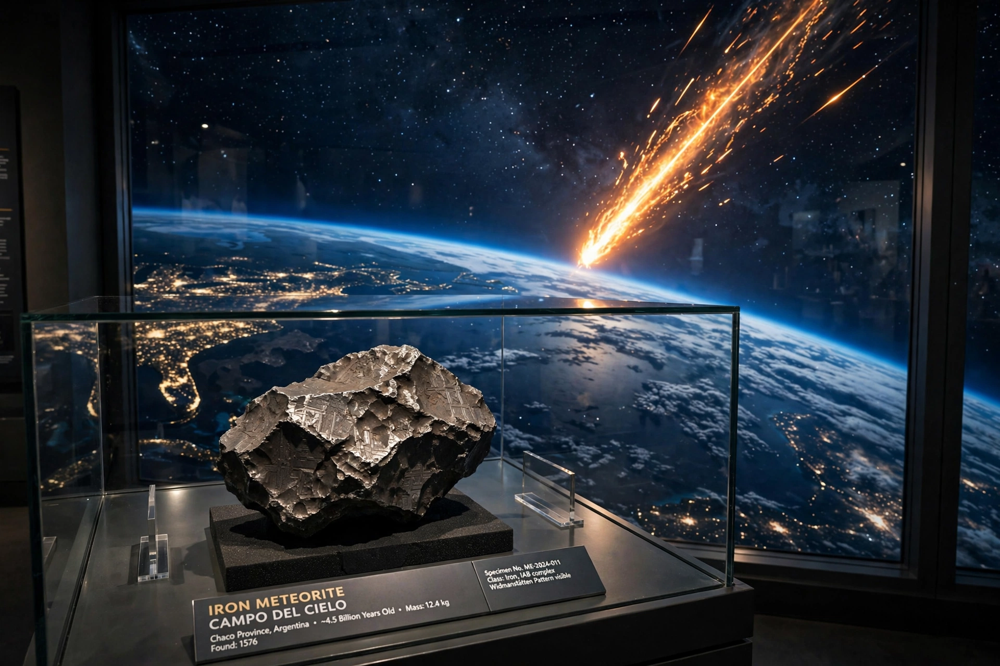

A meteorite is a rock or metal from outer space that survives passage through the atmosphere and reaches the surface of a planet or moon. In flight it is a meteor; in space, a meteoroid.

| Meteorite types | |
|---|---|
| Stony | Chondrites, achondrites |
| Iron | Mostly Fe-Ni |
| Stony-iron | Pallasites, mesosiderites |
Most meteorites come from asteroids; a few come from the Moon and Mars. Chondrites contain chondrules and preserve early Solar System material.
Observed falls are collected quickly; finds, especially in Antarctica and deserts, dominate collections. Famous meteorites include Hoba (largest intact), Allende, and Murchison, rich in organic compounds.
Large impacts form craters and have caused mass extinctions.